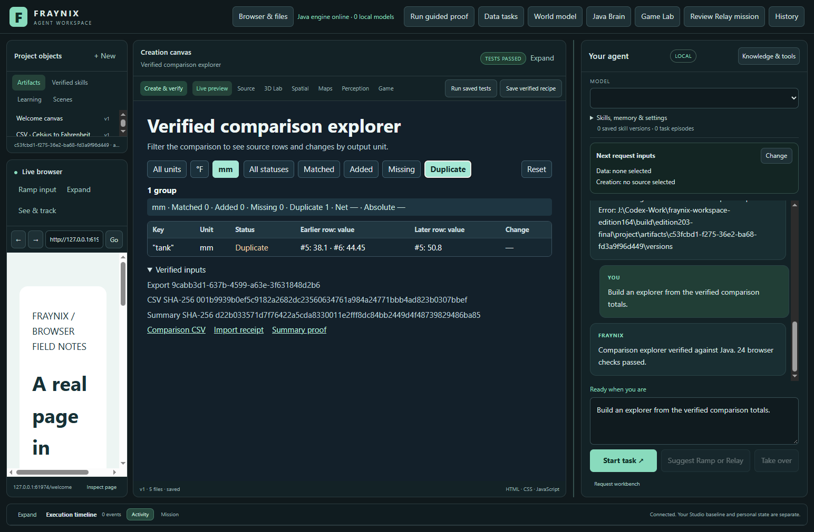
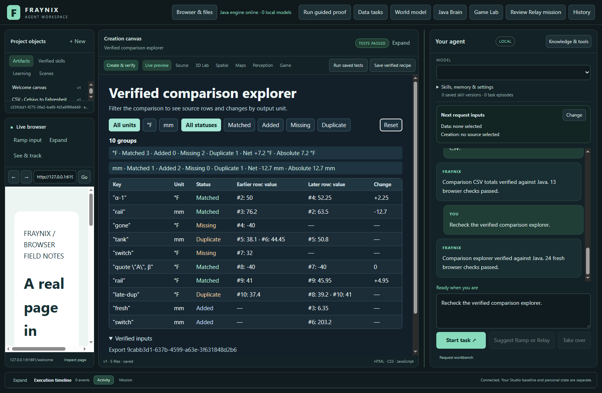

Build an offline explorer from verified comparison totals
Turn a checked comparison summary into a working offline tool. Filter source rows by status and unit, then recheck the same inputs after restart.

After a deliberately blocked test save, the recovered explorer filters the tank readings

The saved explorer passes fresh checks with its original source after restart
System files
Open source